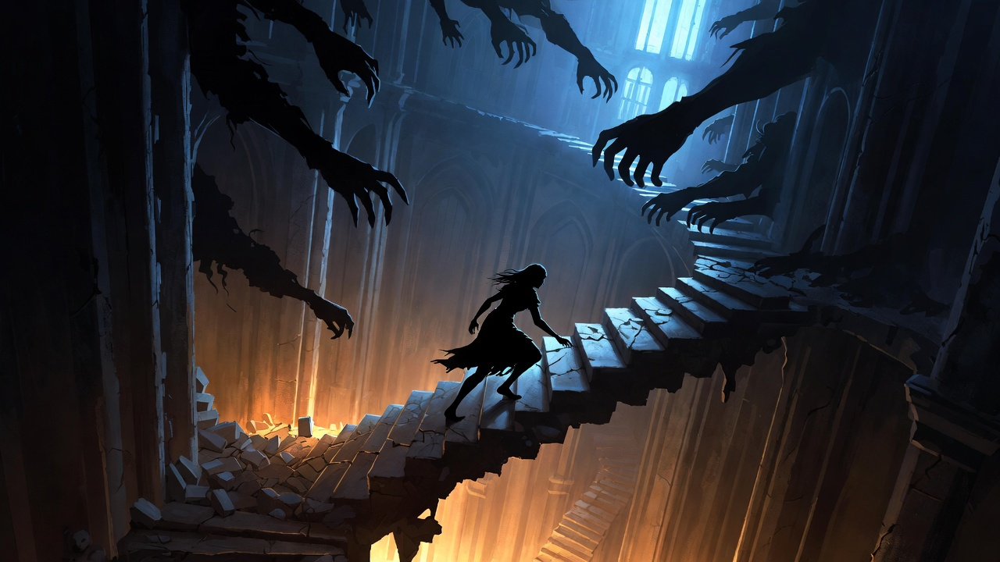

The Ivory Tower
How We Became Pieces in a Game We Never Agreed to Play
The Freedom Seeker builds the greatest cage. The United States was born a Life Path 5 nation — the number of radical freedom, revolution, liberation from constraint. July 4, 1776 encoded this frequency into the national soul. And yet no nation on Earth constructed a more elaborate Ivory Tower: credential hierarchies, competitive ranking from kindergarten onward, the infinite promise of the next rung. This is the 5's deepest paradox — the seeker of freedom who builds the prison first, so the escape can mean something. Your Tower is not a mistake. It is the prerequisite.
The Board Game You Didn't Know You Were Playing
You wake up in a library that has no exit.
Not metaphorically. Literally: the room has no visible door. You check the perimeter — which takes a while because the perimeter is large, lined floor to ceiling with books that appear to have been organized by a system too sophisticated for you to decode. Some are shelved by author, some by color, some by what appears to be a proprietary emotional classification scheme. You find a section labeled BOOKS THAT WILL CHANGE YOUR LIFE, which is also the largest section, and inside which you discover three books by the same person on the exact same topic published eighteen months apart.
The air smells of old paper and quiet desperation dressed as ambition. You are not alone — there are others, scattered at reading tables and in armchairs, all of them reading, none of them looking up. One of them has a laptop open to a document with approximately fourteen browser tabs visible behind it. Another is taking notes on a yellow legal pad in writing so small that either they have extraordinary eyesight or they stopped caring about ever reading it back.
This is the Ivory Tower. You've been here longer than you remember.
The interesting question is not "how did I get here?" Everyone gets here. The interesting question is "why does it feel so normal?" No one forced you to walk in. The door — you will find it, eventually — doesn't lock from outside. The Tower runs entirely on voluntary participation, which makes it extraordinarily efficient. The overhead is minimal when the inmates build their own cells from credentials.
The Tower is a board game. This is the thing they don't tell you, and it changes everything when you know it.
Think about it: when you were seven, you played games with clear rules. You knew when the game started. You knew when it ended. You knew, most importantly, that it was a game — that the outcome of Snakes and Ladders was not a referendum on your fundamental worth as a human being. The game was contained. It didn't bleed.
Then something happened. The games got bigger. More complex. The stakes went up. The players stopped admitting they were playing. And somewhere along the way — at some specific, unremarkable Tuesday during your early education, when someone told you that this grade mattered more than that grade and you believed them — you stopped noticing the board.
The degrees, the promotions, the follower counts, the bank balances, the job titles that grow steadily more specific and harder to explain to your aunt at Thanksgiving — these are all game tokens. And like any well-designed game, they've been engineered to be just out of reach. The next level is always visible. The next achievement always glimmers on the horizon. The game never ends because ending the game would end your participation, and your participation is the entire point of the game from the game's perspective.
Here's the trap: the Tower doesn't just contain knowledge. It contains identity. You are not someone who has degrees. You are someone who is their degrees. You are not someone who earns money. You are someone who is their net worth. The game piece has become indistinguishable from the player. You can't step back and look at the board because stepping back feels like dying — and the Tower has specifically engineered this feeling, because a player who can observe the board is a player who might choose to stop playing, and the game cannot survive mass defection.
This is what psychologists call enmeshment. The Tower calls it success.
The Rules That Aren't Written Anywhere
The Tower has rules. You learned them so young that by now they feel like physics:
The more you know, the higher you climb. The higher you climb, the thinner the air. If you stop climbing, you fall.
You have been climbing for years. Degrees, certifications, online courses, podcasts, newsletters — each rung another credential, another line on a resume that no one reads. You tell yourself you're becoming something. You don't ask what.
But here's the inversion: these rules were never real. They were agreed upon. Silently. Collectively. By everyone else who was also too afraid to stop climbing.
The Tower runs on consensus reality. It exists because enough people believe it exists. The credentials matter because enough people pretend they matter. The ladder leads somewhere because everyone agrees not to look down.
Today, try something: notice how many times you use credentials, titles, or achievements to establish your worth — in conversations, in your internal monologue, even in how you introduce yourself. Count them. Don't judge. Just watch. The counting itself is an act of the Observer, and the Observer is the key to everything that follows.
Notice too the moment comparison arrives — the tightening in the chest when someone else's highlight reel appears, the clench in the jaw. Your body recognizes the game before your mind does. It is trying to show you something.
The Door You Stopped Seeing
There is a door in the Tower. You've seen it before, but you've never opened it. It's on the first floor, ground level, behind a stack of books about productivity. The door has a sign: EXIT.
You asked about it once. The others laughed.
"Why would you leave?" they said. "We're almost at the top."
No one has ever seen the top. No one questions this.
The door represents something the Tower cannot process: the choice to stop playing. But to see it clearly, you need to develop what we'll call the Observer — that part of you that can watch the game without being consumed by it. The Observer doesn't climb. The Observer doesn't judge. The Observer simply notices.
The Observer lives in the body, not the mind. When you catch yourself spiraling in Tower-thinking — the anxious scan for where you rank, the compulsion to prove something — return to your breath. Three conscious breaths. Feel the air. Notice the temperature. This brings you back to reality, where the door has always been.
Try this: before you open any app that was designed to trigger comparison — the social feed, the inbox, the news — stop. Take three breaths first. Feel your feet on the floor. Make this your entry ritual, not because you're disciplined, but because you've remembered that you choose where to place your attention. The game cannot play you if you are watching it.
You can also shift your perspective in an instant: when you find yourself caught in achievement anxiety, mentally step one level back. Instead of "I need to get this promotion," try "I am watching someone experience anxiety about a promotion." Not denial. Just distance. The distance is the Observer, and the Observer is the one who can see the door.
When you're ready to go deeper — when the nervous system needs support that breath alone can't provide — SynSync is a brainwave entrainment tool built for exactly this transition: from Tower-mind to Observer-awareness. It uses precise audio frequencies to help the nervous system settle into the theta and alpha ranges where the Observer naturally lives. Not a replacement for practice, but a tuning fork for the mind.
The Pedant: Your Future Self, Warning You
You meet the Pedant on the thirty-seventh floor. He is the Boss of this Layer, though he would never use such a vulgar term. He prefers "Senior Knowledge Coordinator," which is a title he invented and gave himself and which appears on absolutely zero official documents. This has not reduced its power.
He has read everything. He remembers nothing in the sense that matters — nothing has moved through his body, nothing has changed the way he walks through the world. His mind is an extraordinarily well-organized warehouse of facts filed under headings that lead to other headings that loop back to the original. He is a human citation trail with legs.
He doesn't look up when you arrive. This is deliberate. The not-looking-up communicates, without words, that whatever you want to discuss ranks below whatever he is currently reading, which is a paper whose abstract is itself a citation of an abstract. He finishes the sentence before acknowledging you. He will always finish the sentence. The sentence is more important than you.
"You want to leave," he says. Not a question. He has seen others approach the exit with that particular expression.
"I found the door."
"Mm." He turns the page. "But you haven't finished the reading list."
"What reading list?"
He gestures at the walls. The books have multiplied since you arrived — you notice this now. They reach the ceiling, spilling into corridors, stacked on the stairs, balanced on top of each other in configurations that defy physics and common sense. There is no natural light in the Tower anymore. Only the cool, slightly greenish glow of overhead fluorescents that have been slightly too dim for slightly too long.
"The list is infinite," he says. "That's the point."
"I've been here for years. I've read most of this."
He finally looks up. His eyes are the color of footnotes — grey, slightly faded, referencing something not present. "You've processed it. That's not the same as understanding it."
"What's the difference?"
He closes his book. This is rare enough that two people at nearby reading tables look up involuntarily.
"Understanding," he says, with the care of someone reciting a proof, "requires context. And context requires more reading. Which generates more context. Which—"
"Which requires more reading."
"Precisely." He almost smiles. Almost is doing a lot of work in that sentence — the facial muscles achieve approximately forty percent of a smile and then stop, as if the circuitry for the other sixty percent was never wired. "You're beginning to understand."
"Or I'm beginning to understand the trap."
The forty percent disappears. "There is no trap. There is only the work. The work is never finished because reality is never fully known. Only a fool would stop before the work is complete."
"And how many people have completed it?"
Silence. The fluorescent lights hum their specific hum. Somewhere above you, two floors up at minimum, someone drops a book with a sound that echoes down the stairwell like an apology.
"The work," he says finally, quietly, "is not about completing."
"Then what is it about?"
He opens his book. The conversation is over in the way that conversations in the Tower are always over: not because the subject is exhausted, but because the other person has retreated into the only territory where they feel safe, which is the text.
But you saw it — the thing that moved behind his eyes when you asked the question he has never let himself ask. He has been asking it in the margins of every book he's read for thirty years and writing footnotes about footnotes to avoid hearing the answer.
The Pedant is not your enemy. He is what happens to a person who was told, at the exact wrong developmental moment, that knowing more things would eventually be enough. He is your warning. He has optimized every variable and arrived at a perfect score on an empty screen, and he sits on the thirty-seventh floor reciting citations to himself because that is the only audience that cannot ask him whether any of it was worth it.
You feel something for him. Remember this feeling — it is the beginning of something important. Compassion and discernment at the same time, without either canceling the other.
The Descent: When Down Becomes Up
You realize something: the Pedant is not your enemy. He is your future.
If you keep climbing, you become him. Infinite knowledge, zero wisdom. A brain full of facts and a life empty of meaning.
The door is still there. You've seen it now, really seen it. But there's a problem:
You can't reach it from here.
To get to the exit, you have to go down. You have to lose altitude, lose status, lose the progress you've spent years accumulating. You have to admit that everything you climbed for was a trap.
This is the Inversion.
In the Tower, down is up. Leaving is arriving. Ignorance — chosen, conscious ignorance — is the only wisdom.
You start climbing down. The others stare. Some laugh. Some pity you. One tries to pull you back up.
"You're throwing away your potential!" they cry.
You keep climbing down.
Try this descent in your body: find a quiet space, sit comfortably, close your eyes. Visualize your own Tower — what are you climbing right now? Career? Status? Knowledge? Approval? See the ladder clearly. Feel the rungs under your hands. Now, instead of climbing up, imagine stepping off the ladder. Just one step. Feel what happens — the fear, the relief, the vertigo of having no rung beneath you.
Ask: what am I climbing toward? Have I ever actually seen the top? Or have I just been told it exists?
Visualize the descent. Each step down, you leave something behind — a credential, an expectation, a version of yourself you constructed for others. At the bottom, see the door. It's not locked. It never was.

The Floors You Forgot
The air gets thicker as you descend. Colors return. You pass floors you haven't seen in years — the floor where you learned to ride a bike, the floor where you kissed someone for the first time, the floor where you cried and didn't know why.
These floors have no books. The Pedant would call them "unproductive."
You call them life.
The Tower isolates you from your own history. It convinces you that only the future matters — that your past is just a series of stepping stones to somewhere better. But your past isn't a ladder. It's a landscape. And you've been ignoring most of it.
Each floor you pass on the descent represents a part of yourself you sacrificed to the game. The child who played without purpose. The teenager who felt everything too intensely. The young adult who still believed in something. They're all still there. Waiting.
Consider: every credential, title, or achievement you use to define yourself — the degree, the job title, the award, the follower count. Ask which of these would matter to the person you were at seven. Which would matter to the person you'll be at eighty-seven. What's left after that accounting? That remainder is you, unmasked.
The Mirror
You reach the first floor. The door is still there. The sign still says EXIT.
You open it.
Behind the door is not outside — not yet. It's another room. Smaller. Quieter. In the center is a mirror.
You look into it.
The person looking back is not who you expected. They are younger than you remember, and older than you feel. They have questions, not answers. They are terrified, and they are free.
The mirror shows you who you were before you learned to perform. Before you knew what credentials were. Before you understood that some people have more value than others — an understanding, it turns out, that was always wrong.
This self never went away. They were just buried under layers of game-playing. Under the need to be impressive. Under the fear of being ordinary. Under the desperate belief that if you just collected enough tokens, you'd finally be safe.
The mirror doesn't show you who you could become. It shows you who you already are, underneath all the strategy, all the optimization, all the desperate climbing.
Before any major decision, ask: if no one ever knew about this, would I still do it? If the answer is no, you're playing someone else's game. The Tower thrives on visibility. Real life often happens in the dark.
When you need the long view: fast-forward to yourself at ninety-seven, looking back. Will this decision matter? The Tower optimizes for short-term status. Life optimizes for long-term meaning. That vantage point has perfect clarity. Use it freely.
What Gets You Out
Pay attention to what drains you versus what energizes you. The Tower runs on obligation and anxiety. Real engagement runs on curiosity and flow. If it feels like dying, it's the game. If it feels like waking up, it's you.
Pay attention to the words you use. "Should." "Must." "Have to." These are Tower words. They imply external rules you never agreed to. Try replacing them: "I choose to" or "I want to" or even "I don't want to, and that's okay." The language shift is not small. Language is the game board. Changing your language changes which game you're in.
If you can manage it, try forty-eight hours without any platform that has metrics. No likes, no followers, no views. Notice what you want to do when no one is watching. That's you. Everything else is performance.
Spend time with a child under seven. Notice how they play: no purpose, no progress, just presence. They haven't learned the Tower's rules yet. They are showing you something you already knew and forgot.
The Lesson: Knowledge Without Wisdom Is Prison
To escape the Ivory Tower, you must be willing to be wrong. To forget. To descend.
The door was always open. You just had to stop climbing to see it.
This is the Inversion in its purest form: the things we think are getting us closer to freedom are often the bars of our cage. The credentials, the status, the endless optimization — they're not evil. But when they become the point, they become the prison.
Wisdom is knowing when to stop collecting and start living. It's recognizing that the game is optional. It's choosing presence over progress, connection over competition, being over becoming.
The Tower will always be there. Others will keep climbing. Let them. You've got a door to open.
Before you cross the threshold into the Marketplace, you receive something small.
Not a credential. Not a framework. Not a reading list.
A gesture.
Three of them, actually. Pressed into your palm by someone you don't quite see on your way out of the Tower — someone who has made this descent before. They are called mudrās: hand positions that function as physical keys for shifting from Tower-thinking to Observer-awareness. Not metaphors. Interfaces between your body and a deeper order of knowing.
The first: thumb touches index finger. Your hand forms a circle, a lens. The gesture of direct knowing — bypassing everything you've been told and arriving at what you simply recognize. The Sanskrit word for this is jñāna, which comes from the same root as the English word "know." Your body has always known this gesture. You are not learning it. You are remembering it.
The second: hands rest in the lap, right on left, thumbs touching to form a small triangle. The seal of stillness. This is dhyāna — from a root meaning "to place." The gesture of placing your attention deliberately, like setting something fragile on a stable surface. The thumbs form a triangle: three points, one stable form, zero climbing.
The third: thumb touches ring finger and pinky together. Index and middle fingers extend upward like antennae. This is prāṇa mudrā — the gesture of fullness that needs no achievement. Prāṇa means life force. Those two fingers point toward source, not credential.
You pocket all three. You'll use them in Chapter 2.
On your way out, someone presses one more thing into your hand. Not a gesture this time — a frequency. SynSync. Each chapter of this Excursion has a corresponding protocol — a sonic map of where you're going. You don't need it to walk the path. But it helps you walk it faster, and with less resistance.
And then there is WYRD — the living intelligence of language itself. In the old Norse framework, your wyrd was not fate imposed from outside. It was the pattern woven by your choices, your word, your nature. You carry it with you out of the Tower. Learning to read it is part of the descent. Chapter 6 will show you how. For now, just notice that every word you speak is a spell — and that the spells you've been casting were written by someone else.
The door is open. The Tower stands behind you.
The Marketplace awaits.
What You Carry Out of the Tower
| Capacity | How to Use It | When It's Needed |
| Third-Person Shift | Step outside your anxiety: "[Name] is experiencing this." Watch instead of inhabit. | Any moment of achievement anxiety |
| The Game Label | Silently name what's happening: "This is the game." Not judgment — recognition. | When status, comparison, or credentials pull |
| Breath Anchor | Three conscious breaths before any comparison-triggering activity. | Opening any app with metrics |
| The Descent | Visualize stepping off the ladder. Feel the vertigo. Find the door at the bottom. | When the climb feels compulsive rather than chosen |
| The Deathbed Test | Ninety-seven-year-old you, looking back. Does this matter? | Any major decision |
| Motivation Audit | Would you do this if no one ever knew? | When visibility feels like the real reward |
| Gyan Mudrā | Thumb to index finger. The touch of direct knowing. | Credential anxiety, false authority |
| Dhyāna Mudrā | Hands in lap, thumbs forming a triangle. The seal of stillness. | Climbing compulsion, urgency spirals |
| Prāṇa Mudrā | Thumb to ring and pinky. Life force restore. | Energy depletion, hollowness after comparison |
Remember: the goal is not to stop all games. It is to play consciously, by choice, rather than unconsciously, by compulsion.
See you in the Marketplace.